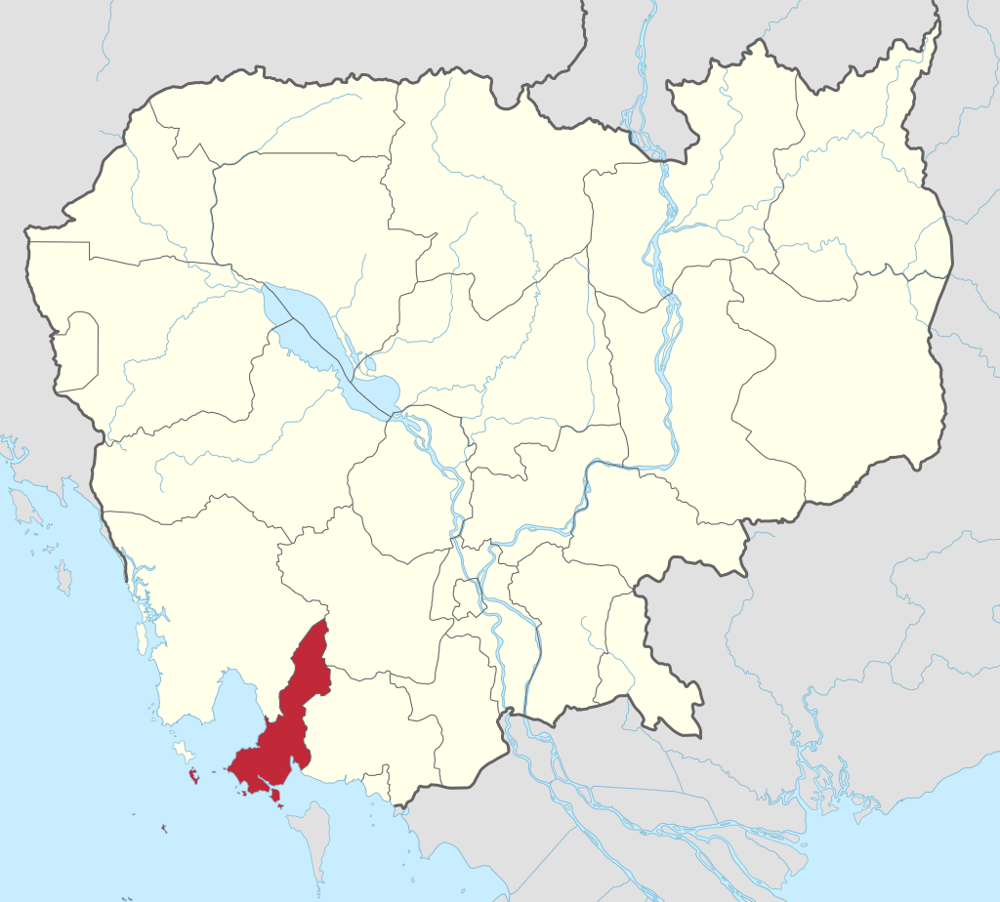
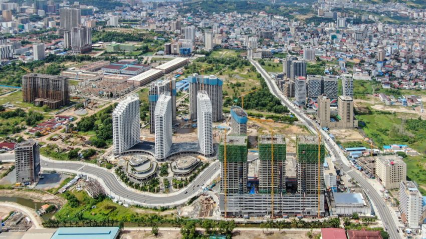
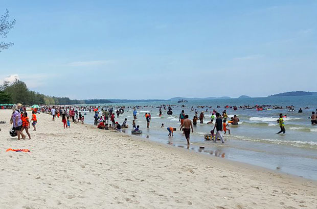
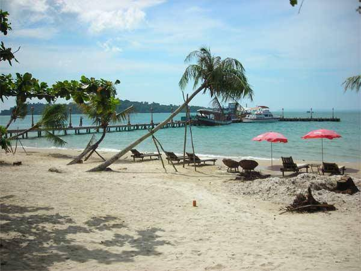

GO HOME
ក្រុង ព្រះសីហនុ
ក្រុងព្រះសីហនុ ជាក្រុងធំបង្អស់នៅប៉ែកខាងត្បូងនៃប្រទេសកម្ពុជា ។ នេះជាក្រុងដែលត្រូវបានបង្កើតថ្មី
នៅឆ្នាំ១៩៦៤ ។ ការបង្កើតក្រុងព្រះសីហនុ គឺដើម្បីរំឭកដល់ស្នាដៃរបស់ព្រះបាទនរោត្តមសីហនុ ។
ឈ្មោះដើមរបស់ក្រុងព្រះសីហនុ មុនឆ្នាំ១៩៦៤គឺកំពង់សោម ។
ក្រុងព្រះសីហនុ ជាទីក្រុងកំពងផែសមុទ្រធំបង្អស់នៅឆ្នេរសមុទ្ររបស់ប្រទេសកម្ពុជា ។ ក្រុងព្រះសីហនុ
ស្ថិតនៅពាក់កណ្តាល ចន្លោះប្រទេសថៃ និងប្រទេសវៀតណាម ហើយក្រុងព្រះសីហនុជាទីក្រុងសំខាន់ជាង
គេនៅឈូងសមុទ្រថៃ ។ ក្រុងព្រះសីហនុជាកន្លែងដែលគួរឱ្យចាប់អារម្មណ៍ណាស់ សម្រាប់ទេសចរណ៍ជាតិ
និងអន្តរជាតិ ។ យោងតាមឯកសារក្រសួងទេសចរណ៍នៃប្រទេសកម្ពុជា បានឱ្យដឹងថា ក្នុងឆ្នាំ២០០៦
មានចំនួនទេសចរណ៍អន្តរជាតិ ប្រមាណជាង ៣២០,០០០ នាក់ មកទស្សនាក្រុងព្រះសីហនុ ។ នៅខែ
មករា ឆ្នាំ២០០៧ ព្រលានយន្តហោះនៅក្រុងព្រះសីហនុ ត្រូវបានបើកសម្ពោធដើម្បីការហោះហើរជាសំខាន់
ក្រុងសៀមរាប-ក្រុងព្រះសីហនុ ហើយតាមគម្រោងនៃរាជរដ្ឋាភិបាល បានឱ្យដឹងថាព្រលានយន្តហោះនៃ
ក្រុងព្រះសីហនុនឹងក្លាយជាព្រលានយន្តហោះអន្តរជាតិនៅឆ្នាំ២០១០ ។
|

ខេត្តព្រះសីហនុ
|

ក្រុងព្រះសីហនុ
|
រដ្ឋបាលខេត្តព្រះសីហនុឆ្នាំ២០២៣
ខេត្តព្រះសីហនុ ជាដែនរដ្ឋបាលស្ថិតនៅ ប្រទេសកម្ពុជា មាន ក្រុង២, ស្រុក៣, ២៩ឃុំ, និងភូមិ÷
|
លេខកូដស្រុក
|
ឈ្មោះស្រុកជាអក្សរខ្មែរ
|
ឈ្មោះស្រុកជាអក្សរឡាតាំង
|
|
១៨០០
|
ក្រុងកោះរ៉ុង
|
Krong Koh Rong
|
|
១៨០១
|
ស្រុកព្រៃនប់
|
Prey Nop district
|
|
១៨០២
|
ស្រុកស្ទឹងហាវ
|
Stung Hao district
|
|
១៨០៣
|
ស្រុកកំពង់សីលា
|
Kampong Seila district
|
|
១៨០៤
|
ក្រុងព្រះសីហនុ
|
Krong Preah Sihanouk
|
អាកាសធាតុ
ទីក្រុងព្រះសីហនុមានរដូវរងា ចាប់ពី វិច្ឆិកាដល់ខែកុម្ភះ និង មានរដូវលំមានប្រាំង ចាប់ ខែមិនា
ដល់ខែឧសភា រដូវភ្លៀង មានចាប់ពី ខែមិថុនា ដល់ខែតុលា៕ ទីក្រុងព្រះសីហនុ គឺជាក្រុងដែល
មានភ្លៀងធ្លាក់ច្រើនជាងគេ នៅប្រទេសកម្ពុជាយើង ពីព្រោះមាន ភ្នំបូគោ នៅខាងជើង។
នៅថ្ងៃដែលក្តៅជាងនៅទីក្រុងព្រះសីហនុ មានកំដៅរហូតទៅដល់ ៣៥អង្សា ហើយបើត្រជាក់ជាង
គេវិញមានរហូត ២០អង្សា ៕
ប្រវត្តិនៃក្រុងព្រះសីហនុ
-ឆ្នាំ ១៩៥៥ រដ្ឋាភិបាលបានចាប់ផ្តើមធ្វើកំពង់ផែ នៅចំកណ្តាលព្រៃជិតមាត់សមុទ្រ នៅកន្លែង
មួយដែលបច្ចុប្បន្ននេះមានឈ្មោះថា ឆ្នេរហាវៃ ហើយធ្វើការសាងសង់រួច នៅឆ្នាំ ១៩៦០ ដោយមាន
ជំនួយឧបត្ថមពីប្រទេសបារាំង ហើយនិងគេបានធ្វើផ្លូវពីក្រុង ភ្នំពេញ ដល់កំពង់ផែថ្មី ដោយមាន
ជំនួយឧបត្ថម្ភពី សហរដ្ឋអាមេរិក ប្រជាជនដែល បានរស់នៅទីនោះគឺពួកគេធ្វើការនៅកំពង់ផែ
នោះ៕ ពេលកំពុងផែបានសាងសង់រូចហើយ គេបានហៅទីក្រុងនោះ ថា ក្រុងព្រះសីហនុ សំរាប់
ធ្វើជាការគោរពចំពោះបិតាជាតិ
-ឆ្នាំ ១៩៦៣ គេចាប់ផ្តើមសាងសង់សណ្ឋាគារ ឯករាជ្យ ហើយមានមនុស្សជាច្រើនបានមកដើរលេង
កំសាន្តនៅទីនេះ ហើយនៅក្នុងឆ្នាំដដែល គេចាប់ផ្តើមធ្វើពង្រីកកំពង់ផែ ។
-ឆ្នាំ ១៩៧០ ពួកគេឈប់រស់នៅ ពីព្រោះ លន់ នល់បានធ្វើរដ្ឋប្រហារទម្លាក់ព្រះបាទនរោត្តមសីហនុ
និងបានមកកាន់កាប់ប្រទេសកម្ពុជា ។
-ឆ្នាំ ១៩៧០- ១៩៧៥ គេប្រើកំពង់ផែសំរាប់ដាក់អាវុធសំរាប់ធ្វើសង្គ្រាម ។
-ថ្ងៃទី១៣ ខែឧសភា ឆ្នាំ ១៩៧៥ ខ្មែរក្រហម បានកាន់កាប់ ទីក្រុងព្រះសីហនុ ហើយនិងខ្មែរក្រហម
បានចាប់យកកប៉ាលរបស់ សហរដ្ឋអាមេរិក ដែលមានឈ្មោះ S.S Mayaguez ជាកម្មករដែលធ្វើការ
នៅលើកប៉ាល់នោះ ហើយសហរដ្ឋអាមេរិកបានទម្លាក់គ្រាប់បែកដែលធ្វើអោយក្រុងព្រះសីហនុមាន
ការខូចខាត់យ៉ាងខ្លាំង រហូតដល់ពួកខ្មែរក្រហមប្រគល់កប៉ាល់និងមនុស្សទៅអោយសហរដ្ឋអាមេរិកវិញ ។
-ឆ្នាំ ១៩៨០ សង្គ្រាមបានបញ្ចប់ គេបានចាប់ផ្តើមសាងសង់ទីក្រុងសាជាថ្មី
-ឆ្នាំ ១៩៩៧ រដ្ឋាភិបាល បាន អោយកន្លែងសំរាប់អង្គការ ដុនបូស្កូកម្ពូជា សំរាប់ធ្វើសាលាបច្ចេកទេស
នៅផ្លូវអូរប្រាំ សំរាប់យុជនក្រីក្រនៅទីក្រុងនេះ និងមកពីខេត្តផ្សេងៗទៀតដែលនៅភាគខាងត្បូងនៃ
ប្រទេស កម្ពុជា ។
-ថ្ងៃទី ១១ ខែ កុម្ភះ ឆ្នាំ២០០៧ ព្រះបាទនរោត្តម សីហមុនី បានយាងមកក្រុងព្រះសីហនុ ឯកឧត្តម
ស្បោង សារ៉ាត់ អភិបាលក្រុង បានទទួលព្រះមហាក្សត្រនៃព្រះរាជាណាចក្រកម្ពុជា ជាមួយនឹង
ព្រះសង្ឃនិមន្តមកពីគ្រប់វត្តនិង ថ្នាក់អ្នកដឹកនាំគ្រប់ជាន់ថ្នាក់ នៅក្រុងព្រះសីហនុ និងលោកគ្រូ
អ្នកគ្រូ សិស្សានុសិស្ស ហើយ និងសាលាបច្ចេកទេស ដុនបូស្កូ ក្រុងព្រះសីហនុ៕
សេដ្ឋកិច្ច
ឆ្នេរសមុទ្រក្រុងព្រះសីហនុរមណីយដ្ឋានឆ្នេរសមុទ្រក្រុងព្រះសីហនុ ស្ថិតនៅក្នុងខេត្តព្រះសីហនុ ជាតំបន់ទេសចរណ៏
គួរអោយចាប់អារម្មណ៏បំផុតនៅក្នុងខេត្តនេះ។ក្រុងព្រះសីហនុ ជាកន្លែងដែលគួរអោយ ចាប់អារម្មណ៍ណាស់
សំរាប់ទេសចរជាតិ និងទេសចរអន្តរជាតិ ។
ក្រុងព្រះសីហនុគឺជាខេត្តដ៏តូចមួយនិងមានឆ្នេរសមុទ្រជាច្រើនហើយស្ថិតនៅក្នុងតំបន់ ត្រូពិចក្តៅនិងសើមដែល
ស្ថិតភាគខាងលិចនិងខាងត្បូងមានឆ្នេរសមុទ្រដ៏ស្រស់ស្អាតជាច្រើន ។ ចំនែកឯភាគខាងលិចឈៀងខាងត្បូង
មានកំពង់ផែពាណិជ្ជកម្ម។ ចំពោះឆ្នេរសមុទ្រនៅតាមបណ្តោយទីក្រុងដែលចេញមកពីភាគខាងជើងទៅភាគខាង
ត្បូងមានដូចជា ឆ្នេរជ័យជំនះ ឆ្នេរកោះពស់ ឆ្នេរឯករាជ្យ ឆ្នេរសុខា ឆ្នេរអូឈឺទាលនិង ឆ្នេរអូត្រេស។ ក្រុងព្រះសីហនុ
ជាខេត្តមួយដែលមានសោភ៏ណ្ឌភាពស្រស់ស្អាត។ មូលហេតុដោយសារក្រុងព្រះសីហនុមាន ទីកន្លែងកំសាន្តពិសេស
ទាក់ទាញ អារម្មណ៏ភ្ញៀវទេសចរណ៏ជាតិ និងអន្តរជាតិ គឺ ឆ្នេរសមុទ្រដ៏ស្រស់ស្អាតមានដូចជា ឆ្នេរសមុទ្រឯករាជ្យ
(អូរតែលប្រាំពីរជាន់)ឆ្នេរសុខា ឆ្នេរអូរឈើទាល អូរត្រេះ ឆ្នេរហាវៃ ឆ្នេរម្លប់ជ្រៃ ទឺកធ្លាក់ក្បាលឆាយជាដើម.....។
ឆ្នេរសមុទ្រក្រុងព្រះសីហនុ
ឆ្នេរសមុទ្រក្រុងព្រះសីហនុរមណីយដ្ឋានឆ្នេរសមុទ្រក្រុងព្រះសីហនុ ស្ថិតនៅក្នុងខេត្តព្រះសីហនុ ជាតំបន់ទេសចរណ៏
គួរអោយចាប់អារម្មណ៏បំផុតនៅក្នុងខេត្តនេះ។
ក្រុងព្រះសីហនុ ជាកន្លែងដែលគួរអោយ ចាប់អារម្មណ៍ណាស់ សំរាប់ទេសចរជាតិ និងទេសចរអន្តរជាតិ ។
ក្រុងព្រះសីហនុគឺជាខេត្តដ៏តូចមួយនិងមានឆ្នេរសមុទ្រជាច្រើនហើយស្ថិតនៅក្នុងតំបន់ ត្រូពិចក្តៅនិងសើមដែល
ស្ថិតភាគខាងលិចនិងខាងត្បូងមានឆ្នេរសមុទ្រដ៏ស្រស់ស្អាតជាច្រើន ។ ចំនែកឯភាគខាងលិចឈៀងខាងត្បូង
មានកំពង់ផែពាណិជ្ជកម្ម។ ចំពោះឆ្នេរសមុទ្រនៅតាមបណ្តោយទីក្រុងដែលចេញមកពីភាគខាងជើងទៅភាគខាងត្បូង
មានដូចជា ឆ្នេរជ័យជំនះ ឆ្នេរកោះពស់ ឆ្នេរឯករាជ្យ ឆ្នេរសុខា ឆ្នេរអូឈឺទាលនិង ឆ្នេរអូត្រេស។ ក្រុងព្រះសីហនុជា
ខេត្តមួយដែលមានសោភ៏ណ្ឌភាពស្រស់ស្អាត។ មូលហេតុដោយសារក្រុងព្រះសីហនុមាន ទីកន្លែងកំសាន្តពិសេសទាក់ទាញ
អារម្មណ៏ភ្ញៀវទេសចរណ៏ជាតិ និងអន្តរជាតិ គឺ ឆ្នេរសមុទ្រដ៏ស្រស់ស្អាតមានដូចជា ឆ្នេរសមុទ្រឯករាជ្យ ( អូរតែលប្រាំពីរជាន់)
ឆ្នេរសុខា ឆ្នេរអូរឈើទាល អូរត្រេះ ឆ្នេរហាវៃ ឆ្នេរម្លប់ជ្រៃ ទឺកធ្លាក់ក្បាលឆាយជាដើម.....។
|

ឆ្នេរអូរឈើទាល
|

ឆ្នេរឯករាជ្យ
|
 ឆ្នេរសមុទ្រសុខា
ឆ្នេរសមុទ្រសុខា
|